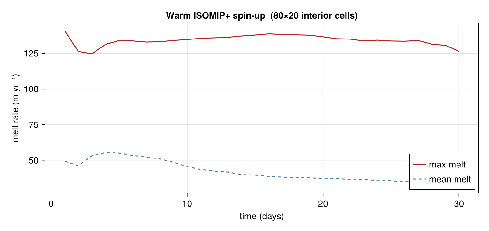
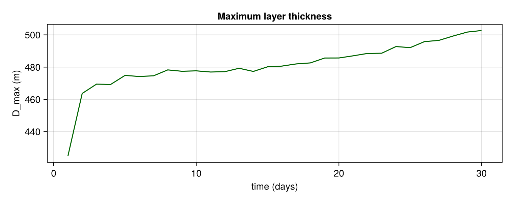

Spin-up time series
How quickly does the cavity reach a quasi-steady state? This example runs the ISOMIP+ warm cavity for 30 days, recording the mean and maximum melt rate and the maximum layer thickness once per simulated day.
The model is advanced in 1-day increments by calling run! in a loop — each call continues from the current state without re-initialisation. A smaller grid (nx = 80, ny = 20) is used to keep the example fast; the spin-up structure is the same as at full ISOMIP+ resolution.
using Laddie
using CairoMakie
CairoMakie.activate!(type = "png")
m = build_isomip(; isomipcond = :warm, nx = 80, ny = 20)
const NDAYS = 30
t_days = zeros(NDAYS)
mean_melt = zeros(NDAYS)
max_melt = zeros(NDAYS)
dmax = zeros(NDAYS)
for d in 1:NDAYS
run!(m; days = 1.0, verbose = false)
mx, mn, _ = meltstats(m)
t_days[d] = d
mean_melt[d] = Float64(mn)
max_melt[d] = Float64(mx)
dmax[d] = Float64(maximum(ifelse.(m.tmask .> 0, m.D.present, zero(m.FT))))
end
nx_int = size(m.tmask, 2) - 2
ny_int = size(m.tmask, 1) - 2Melt rate evolution
Both the mean and maximum melt rate grow rapidly during the first ~10 days as the buoyancy-driven circulation accelerates, then level off toward a quasi-steady state. The peak melt is near the deep grounding line; the domain-mean is lower because it averages over the shallow, low-melt ice front region.
fig1 = Figure(size = (760, 360))
ax = Axis(fig1[1, 1],
xlabel = "time (days)", ylabel = "melt rate (m yr⁻¹)",
title = "Warm ISOMIP+ spin-up ($(nx_int)×$(ny_int) interior cells)")
lines!(ax, t_days, max_melt; color = :firebrick, label = "max melt")
lines!(ax, t_days, mean_melt; color = :steelblue, label = "mean melt",
linestyle = :dash)
axislegend(ax; position = :rb)
fig1
Layer thickness evolution
The maximum layer thickness Dmax grows monotonically as the plume thickens near the grounding line. It plateaus on a similar timescale to the melt rate, consistent with the continuity equation reaching a balance between horizontal divergence, melt, and entrainment.
fig2 = Figure(size = (760, 300))
ax = Axis(fig2[1, 1], xlabel = "time (days)", ylabel = "D_max (m)",
title = "Maximum layer thickness")
lines!(ax, t_days, dmax; color = :darkgreen)
fig2
End-state summary
println("After $(NDAYS) days ($(nx_int)×$(ny_int) grid):")
println(" mean melt = ", round(mean_melt[end], digits = 2), " m yr⁻¹")
println(" max melt = ", round(max_melt[end], digits = 2), " m yr⁻¹")
println(" D_max = ", round(dmax[end], digits = 1), " m")After 30 days (80×20 grid):
mean melt = 32.32 m yr⁻¹
max melt = 126.31 m yr⁻¹
D_max = 502.7 mAdaptive time stepping
The run above used a fixed dt. Enabling AdaptiveDt instead adjusts dt to hold a target CFL number: it shrinks dt where the flow is fast (so the integration stays stable) and grows it where the flow is slow (saving steps). The controller state — the current dt — persists across run! calls, so the same 1-day-increment loop works unchanged; only the Params differ.
m_ad = build_isomip(; isomipcond = :warm, nx = 80, ny = 20,
params = Params(; tstep = AdaptiveDt()))
# run! resets its step counter each call, so sum per-day counts for the total
steps_adaptive = sum(_ -> (run!(m_ad; days = 1.0, verbose = false); m_ad.t), 1:NDAYS)
steps_fixed = NDAYS * m.t # fixed dt → same step count every day
mx_ad, mn_ad, _ = meltstats(m_ad)The controller reaches essentially the same melt rate. In this warm cavity the vigorous circulation holds the CFL near its limit, so dt settles a little below the fixed value and the step count is comparable — here the benefit is that stability is enforced automatically rather than hand-tuned. The step-count saving shows up in slow or under-resolved cavities, where dt can grow well above the fixed step (see benchmark/adaptive_dt.jl).
println("Fixed vs adaptive after $(NDAYS) days:")
println(" mean melt: ", round(mean_melt[end], digits = 2), " (fixed) vs ",
round(Float64(mn_ad), digits = 2), " (adaptive) m yr⁻¹")
println(" total steps: ", steps_fixed, " (fixed) vs ", steps_adaptive, " (adaptive)")
println(" settled dt: 210.0 (fixed) vs ", round(Float64(m_ad.dt), digits = 1), " s (adaptive)")Fixed vs adaptive after 30 days:
mean melt: 32.32 (fixed) vs 32.25 (adaptive) m yr⁻¹
total steps: 12330 (fixed) vs 17069 (adaptive)
settled dt: 210.0 (fixed) vs 143.2 s (adaptive)This page was generated using Literate.jl.